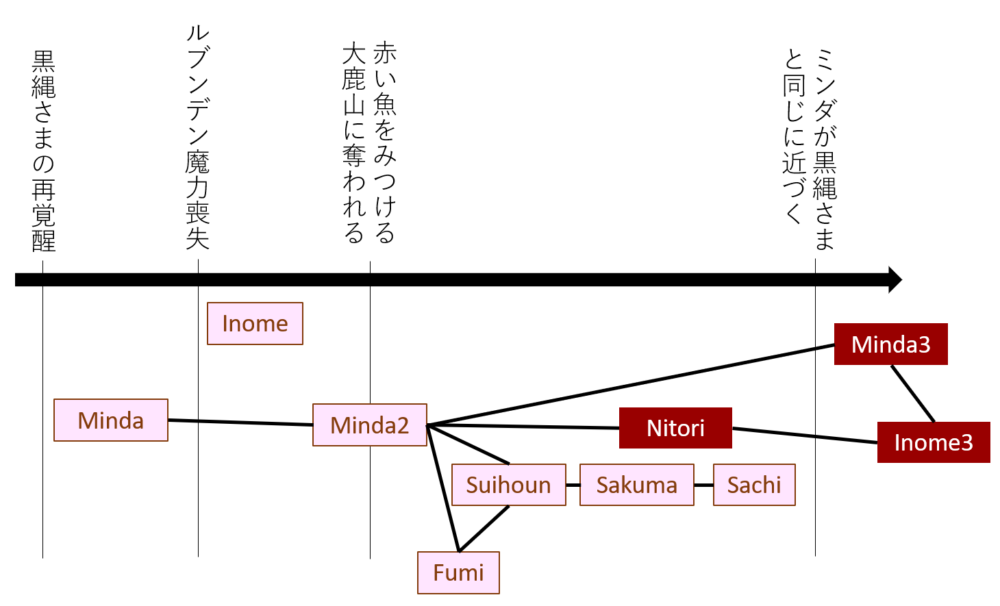
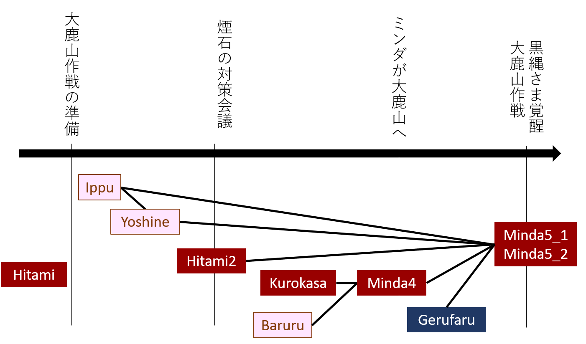
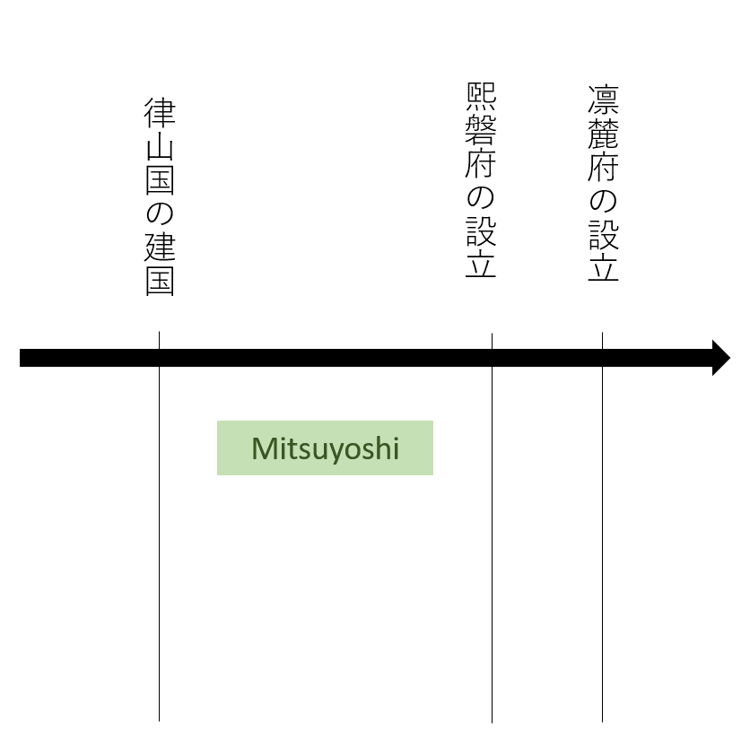

まずは画面説明をご覧ください。
下の表でストーリーを選択してください。選択後「②みる」に遷移します。
デフォルトでは、最近作ったものから順に並んでいます（降順-作成順）。
また「シリーズ」「時系列」は目安であり、厳密な規定はありません。
| 補助タイトル | ファイル名 | シリーズ | 作成順 | 時系列順 |
|---|---|---|---|---|
| 第二章後編 | Kazasaki2 | 5.風咲 | 38 | 2 |
| 第二章前編 | Kazasaki | 5.風咲 | 37 | 3 |
| 第一章 | Mitsuyoshi | 5.風咲 | 36 | 1 |
| 二鳥からの手紙 | Nitori | 2.ミンダ後編 | 35 | 26 |
| 伝説の復古 | RNakia | 4.サナ | 34 | 16 |
| 流星の夜 | Habaic | 4.サナ | 33 | 17 |
| 宴丸の使命 | Utagemaru | 3.多様 | 32 | 8 |
| 空船なりの忠誠 | Meiju | 3.多様 | 31 | 4 |
| カッターの戦略 | Seri | 3.多様 | 30 | 7 |
| 永王の衝撃 | Uzinos | 3.多様 | 29 | 6 |
| 永王への帰依 | Goeibara | 3.多様 | 28 | 37 |
| ゲルファルの身の上 | Gerufaru | 3.多様 | 27 | 34 |
| 迷い子ゲブ | Gebu | 3.多様 | 26 | 5 |
| 禁忌知見集 | Paripero | 3.多様 | 25 | 15 |
| ばせる様の進軍 | Akisato | 3.多様 | 24 | 12 |
| あらわれるばせる様 | Baseru | 3.多様 | 23 | 11 |
| ばせる様の暴動と芦音 | Yoshine2 | 3.多様 | 22 | 14 |
| 緑ヶ淵の閉山 | Umiao | 3.多様 | 21 | 13 |
| おわり、その先へ2 | Minda5_2 | 2.ミンダ後編 | 20 | 36 |
| おわり、その先へ1 | Minda5_1 | 2.ミンダ後編 | 19 | 35 |
| 光の足音と背後 | Minda4 | 2.ミンダ後編 | 18 | 33 |
| 煙石様の再来 | Hitami2 | 2.ミンダ後編 | 17 | 30 |
| 大鹿が呼ぶ | Kurokasa | 2.ミンダ後編 | 16 | 32 |
| 猪目の失態と動揺 | Inome3 | 2.ミンダ後編 | 15 | 25 |
| ミンダの夢と黒傘の不安 | Minda3 | 2.ミンダ後編 | 14 | 24 |
| 揺れ動く猪目 | Inome2 | 2.ミンダ後編 | 13 | 9 |
| ひたみの苦悩 | Hitami | 2.ミンダ後編 | 12 | 27 |
| 爆薬運搬任務 | Yoshine | 1.ミンダ前編 | 11 | 29 |
| 大鉱機の計画 | Ippu | 1.ミンダ前編 | 10 | 28 |
| 乾いた大地、氷の大地 | Suihoun | 1.ミンダ前編 | 9 | 20 |
| 五黒家と根の教会 | Fumi | 1.ミンダ前編 | 8 | 21 |
| バルルとニシン | Baruru | 1.ミンダ前編 | 7 | 31 |
| 白霧鉄山にて | Sachi | 1.ミンダ前編 | 6 | 23 |
| 池家さくまの雑務 | Sakuma | 1.ミンダ前編 | 5 | 22 |
| 猪目 遥音の出張 | Inome | 1.ミンダ前編 | 4 | 18 |
| ミンダと赤い魚 | Minda2 | 1.ミンダ前編 | 3 | 19 |
| 黒縄のミンダ | Minda | 1.ミンダ前編 | 2 | 10 |
| 櫟木の一日 | Kunugi | 3.多様 | 1 | 38 |
| 画面説明 | UserTour | 0 | 0 | |
| あらすじ | Abstract | 0 | 0 | |
| 辞書 | Dictionary | 0 | 0 |
横幅の調整（ディスプレイの横幅に占めるパーセント。可読性確保のため、横幅が狭すぎる(360px未満)場合、見た目が変化しません。）
ストーリーのフォントサイズの変更
フォントサイズ確認サンプル文章
設定のリセット(R)
ストーリーではなく、補助するための設定集などです。
 
